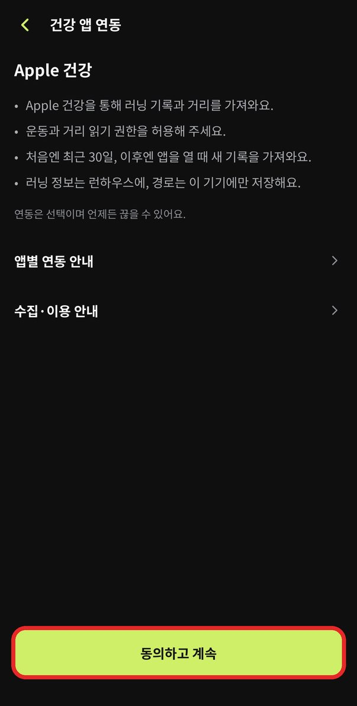
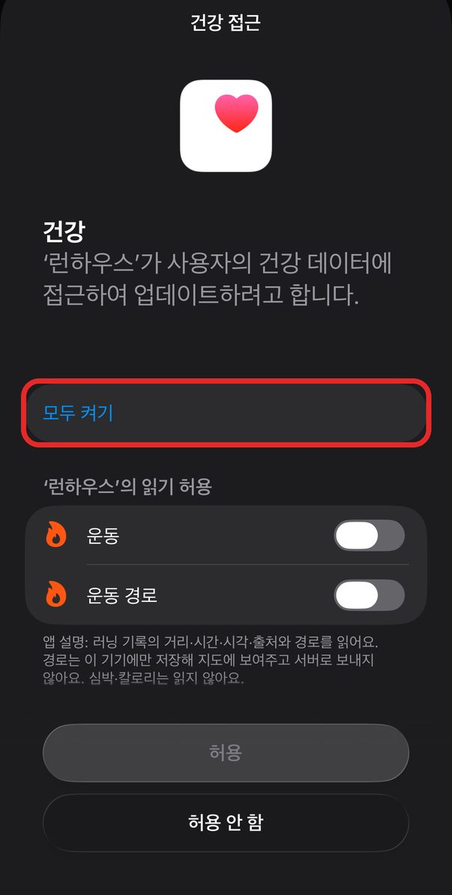
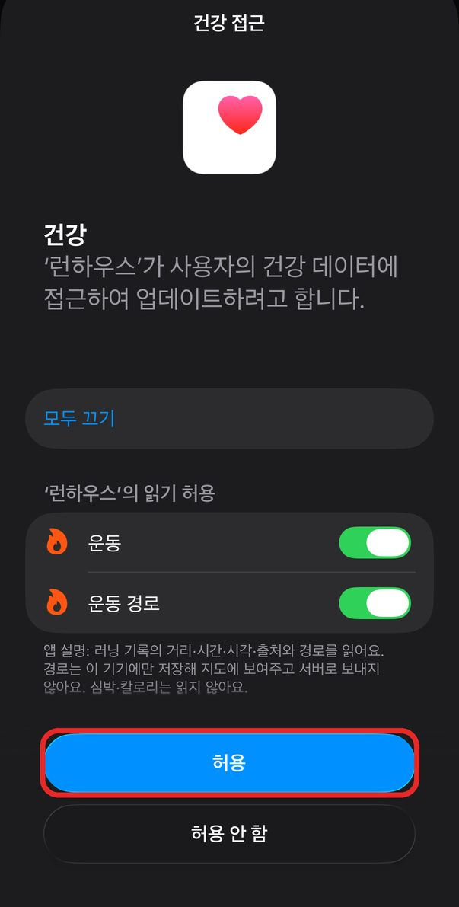
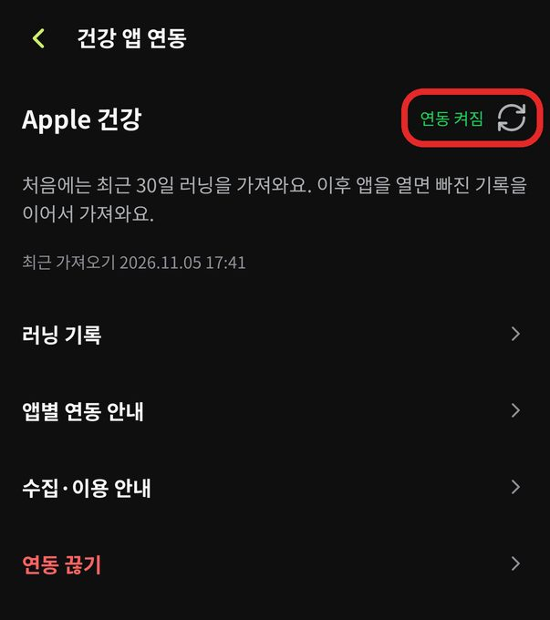
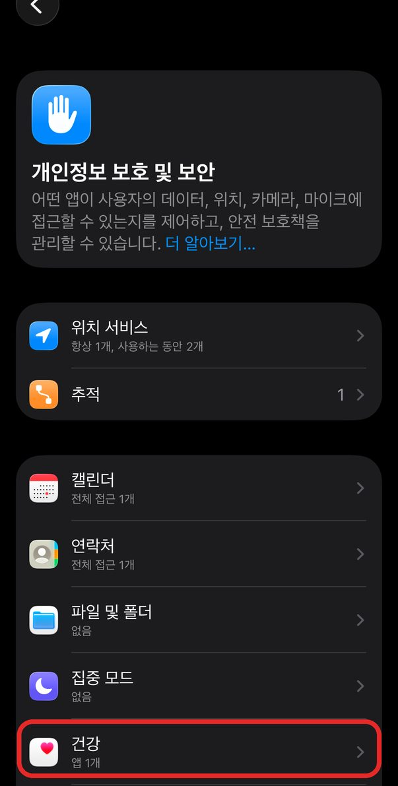
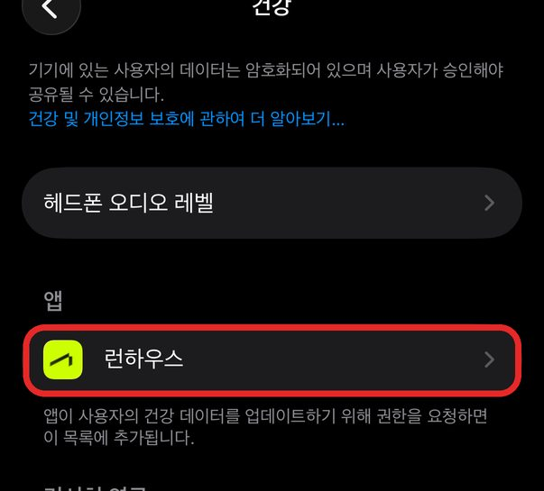
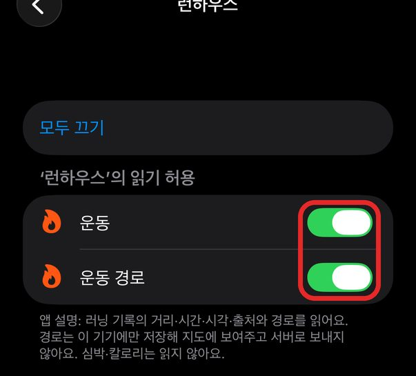

아이폰 기록 연동 안내
(애플워치 편)
사진 속 빨간 네모를 순서대로 누르면 돼요. 연동은 한 번만 하면 돼요.
런하우스와 건강 앱 연동
-
1런하우스 앱 맨 아래 「메뉴」 → 건강 앱 연동을 눌러요

-
2맨 아래 동의하고 계속을 눌러요

-
3모두 켜기를 눌러요
「운동」과 「운동 경로」가 초록색으로 바뀌어요.

-
4오른쪽 위 허용을 눌러요
「허용 안 함」을 눌렀다면 여기를 봐 주세요.

-
5연동 켜짐이 보이면 다 됐어요

연동 끝이에요. 달린 뒤 런하우스를 열면 기록이 자동으로 들어와요.
다음 단계 ↓러닝 기록을 크루에 반영
기록이 들어와도 크루 점수엔 바로 안 올라가요. 기록마다 한 번씩 「지금 반영」을 눌러 주세요.
-
1「메뉴」 → 「러닝 기록」을 눌러요
기록이 안 보이면 오른쪽 위 동그라미를 눌러 주세요. 새 기록을 다시 불러와요.

-
2「반영 전」이라고 적힌 기록을 눌러요

-
3크루와 러닝 종류를 고르고 지금 반영을 눌러요
러닝 종류는 정기런 · 번개 · 대회 · 개인 러닝 중에 골라요.

-
4「○○에 반영했어요」가 보이면 다 됐어요
기록 옆 표시가 「반영 완료」로 바뀌어요.

자주 묻는 질문
「지금 반영」 버튼이 없어요
크루 가입 전에 달린 기록이에요. 크루에는 가입한 뒤에 달린 기록만 반영돼요.

가입 뒤에 달린 기록인데도 없다면 화면을 캡처해 1:1 문의로 보내 주세요.
「허용 안 함」을 눌렀어요
창이 다시 뜨지 않아요. 아이폰 「설정」에서 직접 켜 주세요.
-
1아이폰 「설정」 → 개인정보 보호 및 보안 → 건강
「설정」은 회색 톱니바퀴 앱이에요.

-
2런하우스를 눌러요

-
3「운동」과 「운동 경로」를 초록색으로 켜요
그다음 런하우스 앱을 다시 열어 주세요.

기록이 안 들어와요
- 애플워치 「운동」 앱으로 달렸는지 봐 주세요.
- 런하우스 「러닝 기록」 오른쪽 위 동그라미를 눌러 주세요.
- 아이폰 「건강」 앱에 그 기록이 있는지 봐 주세요. 없다면 1:1 문의로 알려 주세요.
처음 연결하면 최근 30일 기록까지 가져와요. 그보다 앞선 기록은 가져오지 않아요.
기록 옆 표시 뜻
반영 완료 크루에 반영됐어요
반영 전 아직 반영 전이에요
검증 필요 확인을 받은 뒤 반영할 수 있어요
그래도 어려우면 1:1 문의
카카오톡으로 답해 드려요. 막힌 화면을 캡처해서 보내 주시면 더 빨라요.
런하우스 앱 메뉴 → 1:1 문의로 들어오면 내 계정 정보가 자동으로 복사돼요. 채팅창에 붙여 넣어 주세요.

앱이 안 열리면 아래 버튼으로 들어와 주세요. 이름과 크루 이름을 함께 적어 주세요.
카카오톡 문의